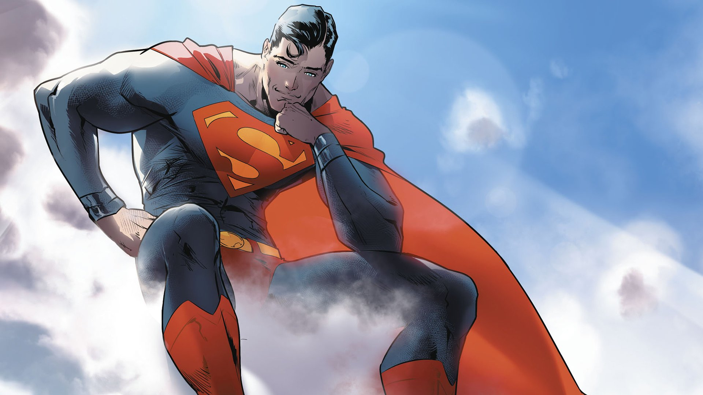

Who Is Superman?
Superman was born Kal-El on Krypton and raised as Clark Kent in Kansas. His powers include flight, super strength, incredible speed, heat vision, and near invulnerability.
Challenges and Victories
- Lost his home planet but made Earth his home and chose to protect it.
- Stopped Lex Luthor's plans without giving up his belief in justice.
- Faced world-threatening enemies such as Brainiac and Doomsday.
- Inspired the Justice League and generations of heroes to choose hope.
Why Superman Is My Favorite
I like Superman because he is Superman. Most heroes put on a mask to become someone extraordinary. Superman is already the hero; Clark Kent is the mask he wears so he can live among ordinary people. The glasses, quiet voice, and awkward behavior hide how powerful he really is. What makes him heroic is not his strength—it is that he continually chooses kindness, self-control, and hope.
UP, UP, AND AWAY!